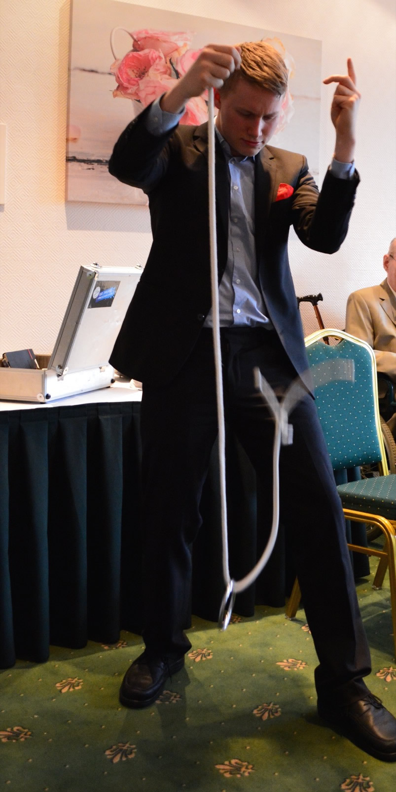
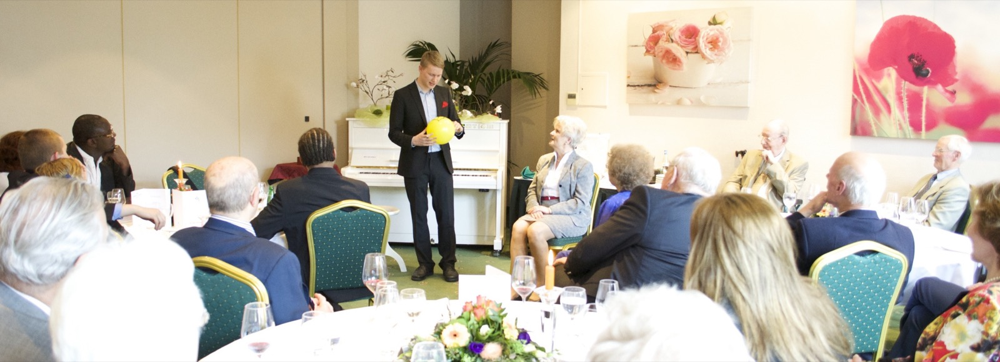
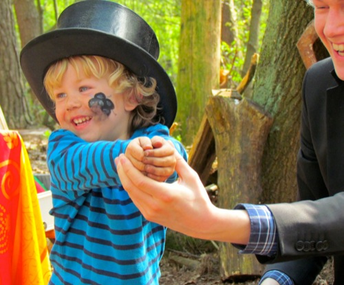
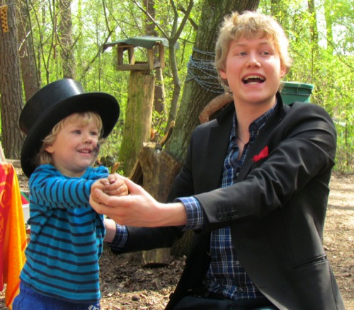
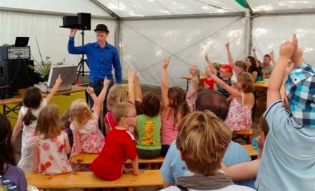
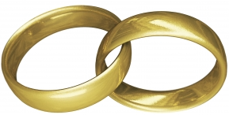

Repertoire
Stage / Stand Up Show The stage show is filled with humor, magic and joy. As many people from the audience get involved in the show, ZauberJanis transforms your event into amazing moments that you will surely remember for a long time. Whether it will be mentalism, virtuous performance or comedy: there always is something for everyone. |
 | |
|
Close Up / At Table ''... I would have liked to see that from close up'' |
| |
 |
Kids Magic Whether it is a birthday party or other kids events: magic always ensures bright smiles, excitement and pure fun. |
  | |
|  |
Special Events To have a suitable show, it can be adapted to you specific event like weddings, Christmas or Easter.
|
|||
|
Wedding |
 | |
|
Christmas |
||